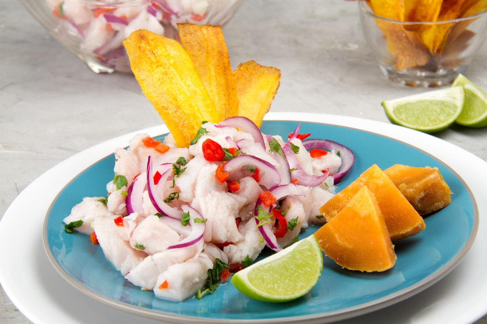

Ceviche is the best known Peruvian salad type dish. It originated in the Moche civilization more than 2000 years ago. It decended from the Andean Country. It is so popular that there is also a National Ceviche Day on June 28 every year. This dish connectes people with the origins and roots of Peruvian culture through food.
- 2 - fish fillets
- 8-10 - garlic cloves
- 1 tbsp. - salt
- 1/2 tbsp. - black pepper
- 1 tbsp. cilantro
- 1 - sliced red onion
- 1 - peruvian yellow chili
- 8-12 - limes, squeezed
- Mix all the ingredients except the red onion
- Spread the red onion on top
- Marinate in the fridge for 2 - 3 hours
- Optional - serve with any cold salad greens like lettuce, corn, or avacado